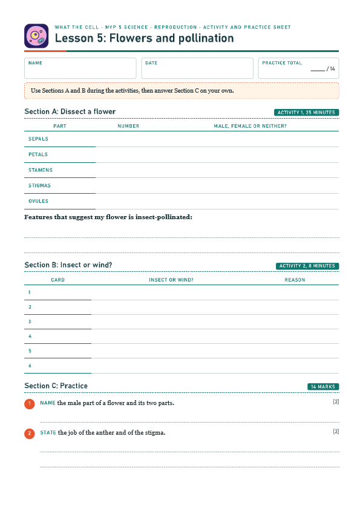

By the end of the lesson you can
- Identify the male and female parts of a flower
- State the job of each part
- Describe pollination and compare insect and wind pollination
- Distinguish between pollination and fertilisation
Keys: arrows or a presentation clicker move the slides, F for full screen. Slides with a red dot have a video or simulation.
Videos (all 5 minutes or less)
- 3:05
The role of the flower
FuseSchool. While you watch: Which parts make up the stamen and the carpel? Slide 9.
- 4:07
Sexual reproduction in plants
FuseSchool. While you watch: What grows from the pollen grain after pollination? Slide 13.
Simulations
- Lab
- Lab
Print and practise

Activity and practice sheet
Used in the lesson’s activities, with practice questions. Your teacher has the answers.
Download (PDF)Lesson 5 slides
All 22 slides in one file, to read again or print. The video buttons on the slides open YouTube.
Download the slides (PDF)Revising? The Revision tab on the unit page has the unit notes and review.
Notes: Flowers and pollination
flower
The part of a plant used for sexual reproduction. For example: hibiscus, mango blossom.
stamen
The male part of a flower: an anther held up on a filament. For example: a lily has six stamens.
anther
The top of the stamen; it makes pollen. For example: the dark tips on the lily.
pollen
Tiny grains made in the anther; each contains a male gamete. For example: yellow dust on a bee's legs.
stigma
The sticky top of the carpel that catches pollen. For example: the red pads on the hibiscus.
style
The stalk joining the stigma to the ovary. For example: the long column in the middle.
ovary / ovule
The ovary is the swollen base; it holds ovules, each with a female gamete. For example: becomes the fruit / the seeds.
pollination
The transfer of pollen from an anther to a stigma. For example: a bee carrying pollen between flowers.
self-pollination
Pollen lands on a stigma of the same flower or plant: less variation. For example: rice.
cross-pollination
Pollen comes from another plant of the same species: more variation. For example: mango, durian.
pollen tube
A tube that grows from the pollen grain down the style to an ovule, carrying the male gamete.
fertilisation (plants)
The male gamete joins the female gamete inside the ovule. For example: then the ovule becomes a seed and the ovary a fruit.
Key words
| stamen | male part: anther and filament |
|---|---|
| anther | makes pollen |
| carpel (pistil) | female part: stigma, style and ovary |
| stigma | sticky top of the carpel that catches pollen |
| pollination | transfer of pollen from an anther to a stigma |
| cross-pollination | pollen from a different plant of the same species |
| pollen tube | grows from the pollen grain to the ovule |
| ovule | contains the female gamete; becomes the seed |